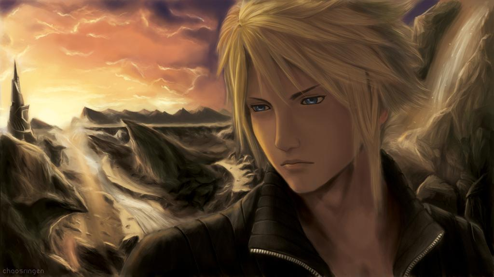

Cloud Strife
クラウド・ストライフ

Cloud strife being depressive
An arrogant and proud swordsman at first, Cloud introduces himself to AVALANCHE as a former member of an elite warrior unit called SOLDIER who has turned mercenary, and uninterested in anything beyond his hired task at hand. He later discovers more about his past and, with the help of his friends, learns there is more to being a hero than possessing physical strength and fame, developing compassion for the Planet and people he fights to protect. He fights to protect the Planet against his nemesis, Sephiroth.
- In his artwork and CG render showing him mounted on the Hardy Daytona for Final Fantasy VII, his weapon is the Hardedge rather than the Buster Sword, which can be stolen from SOLDIER:3rd in Shinra Headquarters.